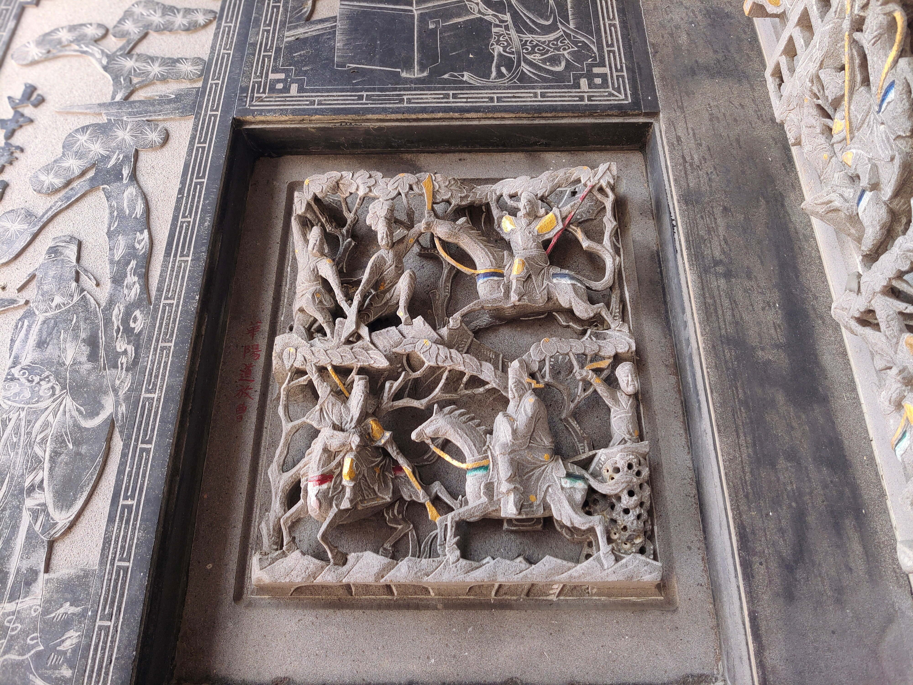

華陽道放曹操
會說話的石頭

圖 華陽道放曹操
關雲長自斬了顏良、文醜報了曹操人情，封金掛印離開曹營之後，千里保嫂過五關回到劉備身邊；在赤壁之戰後，孔明算定曹操必往華容道逃走，但又算出曹操命不該絶，天不亡曹，乾脆留條人情要給關公去做。 諸葛孔明派出子龍、張飛領軍令前往葫蘆谷和烏林埋伏，臨得之前叮囑，只要嚇他曹操就好，不必追趕；營中眾將出陣打領戰功，只有不給關公任務，讓關雲長疑惑，特向孔明邀令出兵。孔明心知關羽需借此行，成就仁義禮智信五德之功，刻意遲出將令。在劉備見證之下孔明和關公立下軍令狀，明言，若遇得曹操卻私放之時，回營需受軍令處置，不得異議。 華容道上曹關兩人狹路相逢，曹操拱手作揖訴說往日情義；「君侯熟讀春秋，當知子濯孺子追庚公之他的故事吧？」關公聽完沉默不語，關公將兵馬沿路邊排開，讓曹操通過，張遼隨後也到達，關公念及昔日屯土山約三事的恩義，也放了他。曹操在前向關公作輯，兵士在後跪地求饒，關雲長揮手示意。關公放走曹操一行人後，回營接受軍令處置。幸好有劉備和眾將求情，關公才免於一死。
資料來源： https://reurl.cc/Lnp6eK